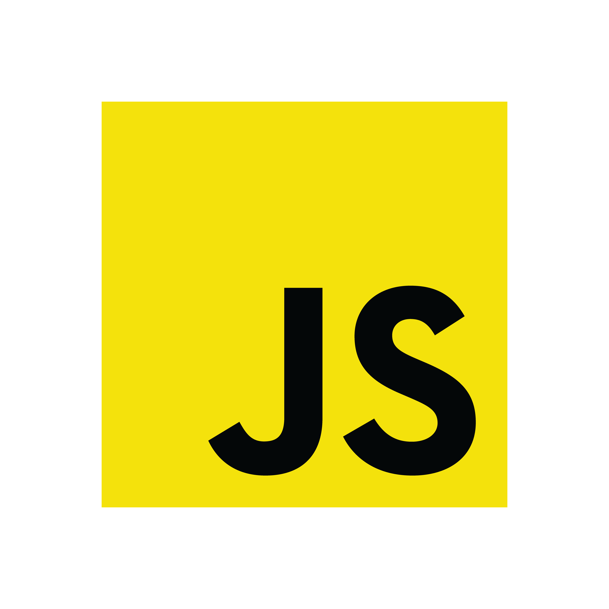

Hello, I am Joshua Stone a Cyber Security Graduate who is ambitious to get into the software world.
In whatever free time I have I am learning new skillsets within coding ranging from learning new software languages to simply hosting services to help provide me with experience to land a role within the industry.
I have a great passion for software development and engineering which can be seen from the projects I have completed below.
To learn more about my skills, experience and professional background, you can view my CV below:
Over the past two years I have deliberately invested significant time into building strong technical depth through self directed learning and hands on development.
My focus has been on writing clean maintainable code and understanding how systems behave beyond surface level usage.
C# and .NET: Strong understanding of object oriented programming LINQ collections file IO exception handling
console applications and WinForms with a focus on clean architecture separation of concerns and testable logic.
JavaScript: Advanced use of modern JavaScript for DOM manipulation event driven logic validation
and building interactive browser based tools without relying on frameworks.
HTML and CSS: Semantic accessible markup and responsive layouts with attention to structure
readability and long term maintainability rather than visual shortcuts.
SQL: Practical experience designing relational schemas writing queries joins aggregates
and working with real application data through SQL Server and MySQL environments.
PowerShell: Practical scripting knowledge for automation file handling logging scheduled tasks
background execution and integrating with Windows services and system level workflows.
Python: Foundational to intermediate knowledge used for small automation scripts
problem solving and understanding cross language programming principles.
Certifications and Learning: Achieved the Microsoft C# Fundamentals certification
alongside several advanced courses and continuous portfolio driven development.
Practical Application: Applied all skills through real projects including automation tools
CLI applications desktop utilities and web based systems rather than isolated tutorials.
This portfolio reflects hands on problem solving and real technical growth built through applied development.
Programming Languages

Cyber Security
This portfolio tracks how I am recapping my cybersecurity degree skills and applying
them to an insurtech environment like SBS Insurance Services
A .NET 9 console application that prints cafe menus (coffee, chocolate, cold drinks, syrups, bottled drinks and food),
highlights vegan options and generates a QR code linking to a placeholder ordering site.